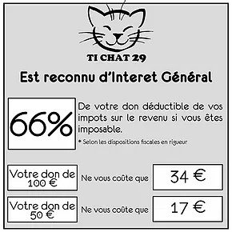

Recueillir des dons est essentiel pour Ti chat 29, car les dépenses engagées pour prendre en charge nos pensionnaires en famille d'accueil, soigner et stériliser les chats errants, ne sont couvertes qu'en partie par les frais d'adoption.
Les dons donnent lieu à une déduction fiscale de 66% du montant du don, car l'association est reconnue d'intérêt générale.
Si vous effectuez un don n'oubliez pas de nous transmettre vos coordonnées (nom - prénom - adresse postale - adresse mail), afin que nous puissions vous adresser un reçu fiscal.
Pour faire un don, deux solutions :
En cliquant sur le lien ci-dessous pour accéder au site Helloasso
Par chèque à l'ordre de Ti Chat 29
Association Ti Chat 29
Nigolou
29940 La Foret-Fouesnant
Vous pouvez également nous aider grâce à des dons matériels :
alimentaires ( croquettes, pâtée, friandises)
litières
jouets, gamelles, bacs à litière, caisses de transports...
Tous les dons comptent !
Merci pour votre soutien !
L'association ne possédant pas de locaux, elle fonctionne uniquement par le biais de familles d'accueil. Afin de recueillir de nombreux chats et chatons, nous sommes perpétuellement à la recherche de nouveaux foyers prêts à se lancer dans l'aventure !
En devenant famille d'accueil, vous permettrez à un animal de se rétablir, de reprendre confiance, d'être respecté et aimé et de pouvoir être adopté dans les meilleures conditions possibles.
L'association s'engage à fournir la litière et les croquettes, les frais vétérinaires sont bien sûr pris en charge auprès de nos vétérinaires partenaires. La famille d'accueil pour sa part, devra conduire l'animal chez le vétérinaire en cas de besoin, et accueillir les adoptants potentiels à son domicile.
N'hésitez pas à nous contacter pour de plus amples informations !
Qui souhaite se lancer dans cette belle aventure et faire partie de la folle équipe de bénévoles des ti chat 29 ?
Vous nous demandez souvent comment aider notre association
Malheureusement vous n'avez pas toujours le temps ou pas toujours les moyens ?
Nons avons la solution ;-)
Il suffit d'utiliser Lilo comme moteur de recherche
C'est aussi efficace que Google et ça vous rapporte des gouttes que vous pouvez reverser à ti chat 29.
Voici le lien, c'est facile , c'est gratuit et ça peut rapporter gros!
(pour nos ti chats)